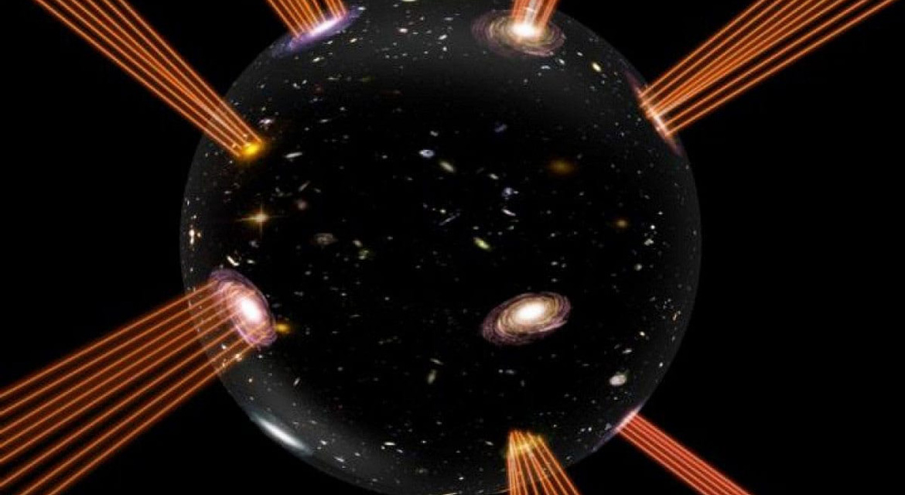

¿Que es el universo Burbuja?
Al principio, solo existía el vacío, pero rebosaba energía, supuestamente de la clase conocida como “energía oscura”, o descrita también a veces como energía del vacío, campo de inflación o campo de Higgs. Como el agua que entra en ebullición, esta energía colosal empezó a “evaporarse”, y en consecuencia se formaron “burbujas”. Cada burbuja contenía otro vacío, cuya energía era más baja, pero nada más todavía. Esta energía hizo que las burbujas se expandieran. Inevitablemente, algunas burbujas chocaron entre sí. Es posible que algunas produjeran burbujas secundarias. Quizá las burbujas eran escasas y estaban alejadas entre sí; o quizá eran abundantes y estaban muy próximas unas de otras, como en la espuma. En cualquier caso, según las hipótesis del multiverso, cada una de estas burbujas era un universo. Nuestro universo, por tanto, solo sería una burbuja en un mar de otras burbujas, cada una albergando un universo.

Johnson y sus colegas están intentando descubrir qué predicciones de esta hipótesis son comprobables, lo que permitiría, mediante las observaciones adecuadas, determinar si se cumplen o no. En concreto, Johnson ha estado considerando los raros casos en los que nuestro universo-burbuja podría colisionar con otro. A tal fin, él y sus colegas han recurrido a simulaciones digitales. Estas empiezan con un multiverso que posee dos burbujas, y observan qué sucede cuando colisionan, y qué podría percibir un observador hipotético situado en nuestro universo. Los resultados de la investigación apuntan a varias posibles huellas detectables. Disponiendo de algunas predicciones que se puedan someter a prueba, cada modelo propuesto para el multiverso se podrá validar o descartar. Por lo pronto, los autores del estudio ya han conseguido descartar algunos de esos modelos.

Según algunas de las hipótesis, una de las huellas más claras de colisiones de un universo-burbuja con otro dejaría lo que Johnson describe como “un disco en el cielo”, concretamente una “rotura” con forma circular en el Fondo Cósmico de Microondas. El hecho de que no se haya detectado tal rotura circular apunta a que los modelos de multiverso que la contemplan están equivocados y que el multiverso, en caso de existir, no es como lo describen tales modelos.
El equipo de Johnson sigue trabajando en esta línea de investigación, averiguando qué otros tipos de huellas podría dejar una colisión entre burbujas. Hasta donde se sabe, esta es la primera vez que se presenta científicamente un conjunto directo cuantitativo de predicciones sobre las huellas observables de colisiones entre universos-burbuja.